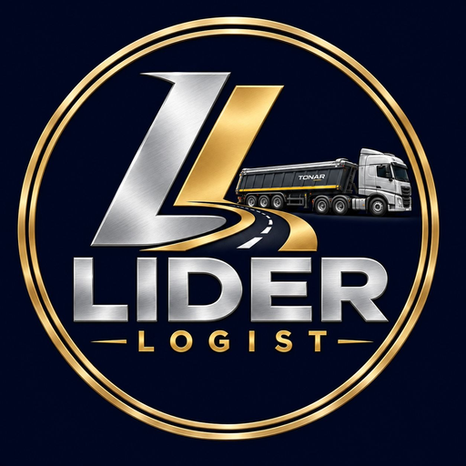

Грузоперевозки самосвалами и фурами по Шымкенту и Казахстану
Перевозим песок, щебень, гравий, уголь и другие грузы на собственном автопарке. Работаем по договору, напрямую с заказчиком.

Наши услуги
Перевозка инертных материалов
Перевозим песок, щебень, гравий и клинец самосвалами для стройплощадок, дорожных работ и бетонных заводов.
Перевозка больших объёмов грузов
Опыт перевозок крупных объёмов для заводов и компаний. Собственный автопарк позволяет подобрать нужное количество машин.
Самосвалы и полуприцепы Tonar
Самосвалы и самосвальные полуприцепы Tonar для сыпучих и строительных грузов.
Строительные и другие материалы
Возим уголь, известняк, руду и другие материалы для карьеров, производств и торговых компаний.
Тентованные фуры и платформы
Тентованные фуры и платформы для грузов, которые перевозят в закрытом кузове или на платформе.
Почему выбирают нас
Собственный автопарк
Своя техника, без поиска подрядчиков.
Прямая работа с клиентом
Общаетесь напрямую с владельцем.
Договор и документы
Работаем документально, по договору.
Транспорт под ваш груз
Самосвал, полуприцеп Tonar, тент или платформа.
Большие объёмы
Опыт работы с заводами и крупными компаниями.
Работаем 24/7
Без выходных, звоните в любое время.